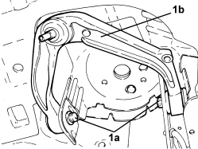

4410B68 UPPER TRACK CONTROL ARM (ONE), LEFT OR RIGHT FOR FRONT SUSPENSION - R.R. CHECK WHEEL GEOMETRY SEPARATELY
- Path
- Procedures > 44 SUSPENSION AND WHEELS > 4410 FRONT SUSPENSION > 4410B FRONT SUSPENSION TRACK CONTROL ARMS > 4410B68 UPPER TRACK CONTROL ARM (ONE), LEFT OR RIGHT FOR FRONT SUSPENSION - R.R. CHECK WHEEL GEOMETRY SEPARATELY
- Kind
- repair procedure (removal / refitting; the operation number is the code)
- Applies to
- all engines; all production periods
- Interactive page
- https://sloeber94.github.io/elrnDB-aBrrSpdr/en/#/946002200
Applies to: all engines; all production periods
 Removing
Removing
 Refitting
Refitting- Position the vehicle on a lift.
1. Undo the bolts (1a) and remove the front suspension track control arm (1b).

Applies to: all engines; all production periods
Refitting
Removing1. Refit the front suspension track control arm (1a) and secure by tightening the new bolts (1b) to the specified torque.

Applies to: all engines; all production periods
- Remove the vehicle from the lift.
Topics linked from this page (2)
- 4410A12 FRONT SUSPENSION DAMPER (ONE), LH OR RH - FOR MCPHERSON STRUT SYSTEM - INCLUDES DISMANTLING/REASSEMBLY OF ASSEMBLY AT BENCH - R.R
- 4410A80 LOWER FORK CONNECTING FRONT SUSPENSION SHOCK ABSORBER TO LOWER TRACK CONTROL ARM (ONE), LEFT OR RIGHT - R.R. CHECK WHEEL GEOMETRY SEPARATELY